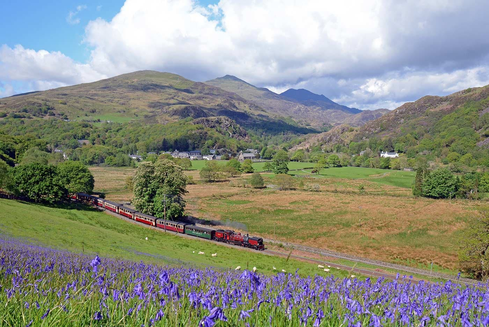
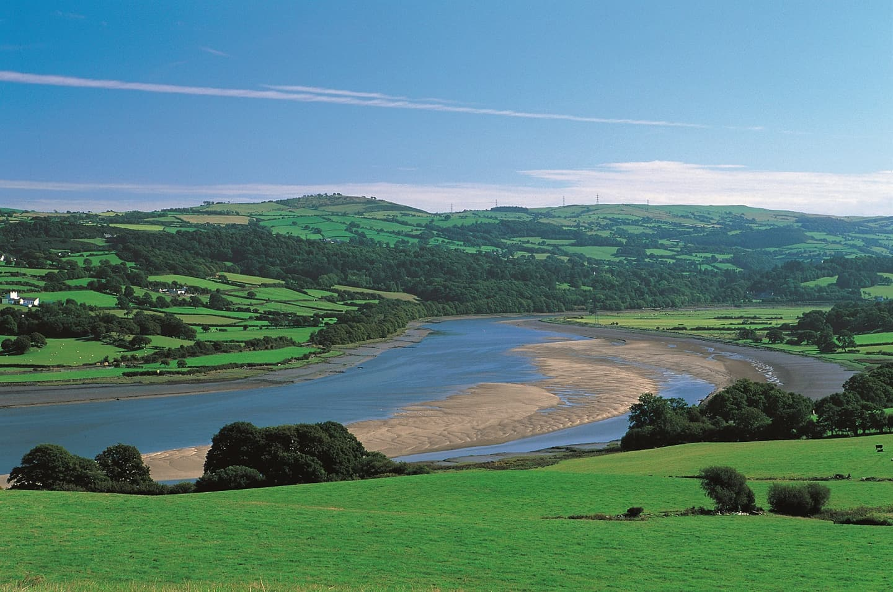
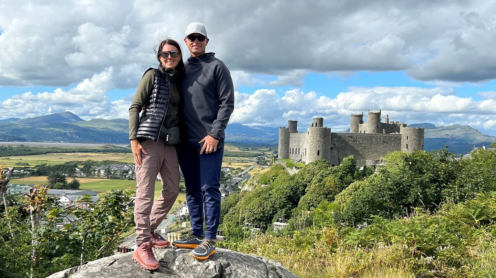
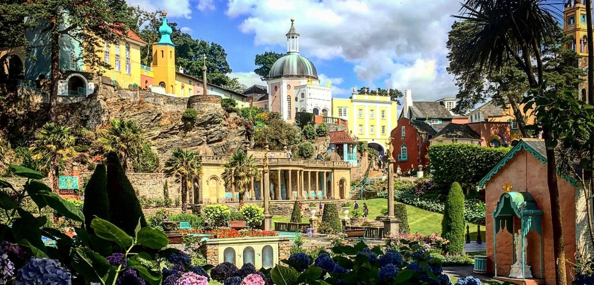
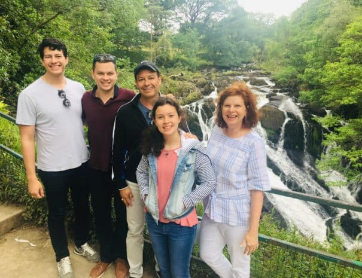

North Wales in a Nutshell
For a time precious visit, this tour will help you capture the very best highlights of North Wales all in one day.

“We are one of a few private tour operators in the world with a consistent 5 Star rating from our customers!”

Amazing Private Driver Guided Day Tours of North Wales

We offer some amazing tour experiences and you’ll get to see and discover so much more than trying to drive yourself or getting around by public transport. North Wales boasts so many interesting areas and each of our touring days is packed full with a variety of interesting tour content and options to create the every best destination experiences. We’ll take you places where the tour buses can’t reach and that you would never find on your own.
Tours of North Wales, the Eryri (Snowdonia) National Park, the Isle of Anglesey, the Llyn Peninsula and the Scenic Borderlands of North East Wales.
For a time precious visit, this tour will help you capture the very best highlights of North Wales all in one day.
This is a perfect tour for entering Wales from Liverpool, Chester and Manchester, where we tour through the scenic Borderlands, visiting picturesque riverside towns and the medieval walled town with its Castle at Conwy.

One of the best rated private driver guide tours in Great Britain, our tour of the Eryri (Snowdonia) National Park capturing lakes, mountains and visits scenic Welsh riverside villages.

A beautiful day combining medieval history and the spectacular scenery of the Eryri (Snowdonia) National Park.

From the famous Italian style village, to riding aboard one of our ‘Great Little Steam Trains’ through the scenic Snowdonia (Eryri) National Park.

A beautiful touring day of contrasting scenic locations capturing highlights of the Eryri (Snowdonia) National Park and the Isle of Anglesey.

As the fifth largest island off the coast of Great Britain, the Isle of Anglesey provides a treasure trove of stunning historic and cultural sites to visit on this full day island tour.

You can’t miss the Llŷn Peninsula on the map. It’s that crooked finger of land that extends 30 miles out into the Irish Sea and features some of the most dramatic coastal settings in Britain.

Discover a tranquil corner of Wales visiting a range of historic sites and beautiful panoramic landscapes, with a two featured walks, one of which is across the UNESCO Pontcysyllte Aqueduct/

This tour takes in a beautiful area of North Wales with historic and hidden gems, secret lakes and views and Welsh villages.

The 13th century collection of castles and walled towns, built by King Edward 1st of England after his conquest of Wales. Our tour visits Conwy, Beaumaris, Caernarfon and Harlech.

All aboard! A blast of the whistle and the hiss of steam and you’re away!

The Snowdonia (Eryri) National Park is a land of myth and legends, from the true Welsh Princes, to dragons, giants and King Arthur. Southern Snowdonia features a beautiful coastline and stunning landscapes.

From the UNESCO medieval walled town and castle at Conwy, to the Smallest Cathedral, Church and House and one of the best rated gardens in Great Britain.

Wales has a unique culture all of its own. Join us to discover real life in Wales and its history and scenery with a visit to the slate quarries and the tranquility of the countryside/farmland and scenery.
A stunning touring day featuring the unique medieval walled town of Conwy with its castle, followed by a visit to one of the best gardens in Great Britain and then a drive through stunning Snowdonia

If you are looking to tour across the North Wales region, we can offer a variety of quality touring days, creating your very own custom designed tour from 2 to 6 days in duration.
North Wales provides a great destination to discover and explore. With so much to see and do and a great variety of interesting tour content, we recommend three or four days of touring.
Naturally, having a good base to tour from is a key component and we recommend two great locations with the Victorian coastal resort town of Llandudno or the medieval walled town of Conwy.
There is plenty of accommodation to choose from and we recommend that you consider a single base to tour out from each day, as in the season there is so much demand for accommodation, that single night stays are generally not available at the better rated accommodation.
NEW for 2025 – Why not Consider a two centre Tour splitting between Southern Snowdonia (Eryri) and the North Wales coast.



This was without a doubt one of our all-time favourite tour experiences on any vacation that we have ever taken anywhere!Eric Jenkins from Alpharetta, Georgia, USA
A Ten Star Tour Experience!Revis Meeks from New York, USA
This was my favourite of all the ten days that we spent on tour through the UKKathy Accola from Providence, Rhode Island, USA
The best tour of our entire vacation.Jill Nesselbeck from Buffalo, New York USA
This tour was better than any other tour guide that we’ve met and taken tours with!Nathan Denton from Sydney, Australia
The Best Tour Ever!! I would say after many different tours we have taken in numerous countries, this was one of the very best!Janet and David Jordan from Bend, Oregon, USA
Excellent personally guided tour and the highlight of our visit to the UK.Paula Walmet and Family from Daniel Island, South Carolina, USA
Amazing customised 2 day tour with an absolutely incredible tour guide!Patricia Maino from Las Condes, Santiago, Chile
An amazing 4 Day Tour of North Wales, with an amazing Tour Guide!Erika Crane from Ada, Michigan, USA
Our two Day Tour far Exceeded our Expectations!Laura Nealley, from Glen Allen, Virginia, USA
A Superb Tour Experience!Alexander and Beatrice von Daeniken from Lucerne, Switzerland
It’s your very own private tour and we can custom design a tour itinerary to suit what you want to do and see. Our flexibility in designing a tailor made tour means you have the flexibility to make changes to any of our tour examples. So take something out or add something more appealing to your desires, or alternatively, add an element from another tour and combine it to create your perfect touring day.
All you have to do is ask and if it is possible, then it will be our pleasure to accommodate your wishes.